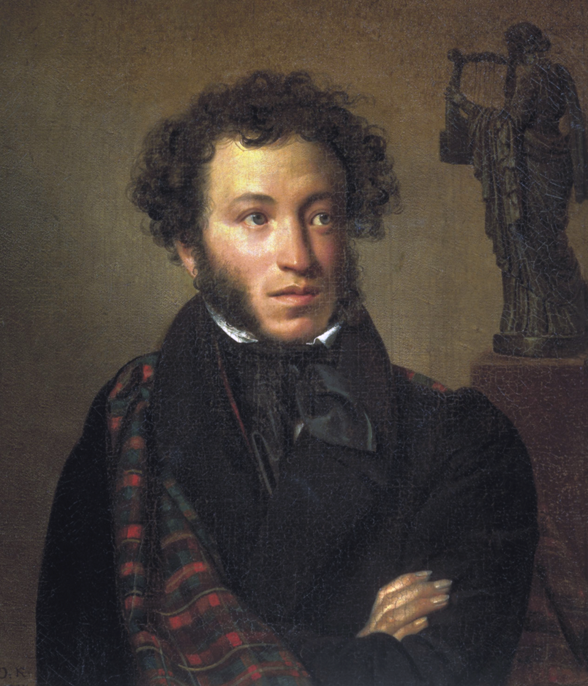

Биография
Читать биографиюАрина Родионовна Источник вдохновения Яковлева Арина Родионовна была не просто няней, а «музой» раннего Пушкина. В то время как родители поэта были заняты светской жизнью, няня стала для него олицетворением народной мудрости и русского языка. Михайловская ссылка (1824–1826): Это время стало пиком их близости. В глуши, вдали от Петербурга, Пушкин долгими вечерами слушал её сказки и поверья. Влияние: Именно из её рассказов выросли сюжеты «Сказки о царе Салтане» и многих других произведений. Он называл её «подругой дней своих суровых», и она оставалась его единственным утешителем в моменты одиночества.
Наталья Гончарова «Моя Мадонна» В 1828 году на балу Пушкин встретил 16-летнюю Наталью Гончарову. Она была ослепительно красива, и поэт влюбился мгновенно. Сватовство: Пушкин получил согласие не сразу — семья Гончаровых сомневалась в его политической благонадёжности и достатке. Лишь в 1831 году они обвенчались. Семейная жизнь: Наталья Николаевна родила Пушкину четверых детей. Однако её успех в высшем свете стал для поэта источником тревоги. Постоянные балы, внимание самого царя и финансовые трудности давили на Александра Сергеевича.
Александр Сергеевич Пушкин родился 6 июня 1799 года в Москве. Он считается основоположником современного русского литературного языка.
Образование он получил в Царскосельском лицее, где проявил свой талант к поэзии уже в юном возрасте.
Родословная Пушкина — это сплав древнего боярства и экзотической «крови». Мария Алексеевна Ганнибал (бабушка): Пожалуй, самый близкий человек в детстве поэта после няни Арины Родионовны. Именно она научила Александра прекрасному русскому языку, рассказывая семейные предания о «чернокожем» предке. Она фактически занималась его воспитанием в подмосковном имении Захарово, пока родители блистали в свете. Артемий Иванович Воронцов Граф и сенатор, который приходится Пушкину крестным отцом. Он был женат на Прасковье Федоровне Квашниной-Самариной, которая была дальней родственницей Пушкиных. Именно в его доме в Москве часто бывали родители поэта, и именно он держал маленького Александра над купелью в церкви Богоявления в Елохове. Детство и Лицей: Чири
Период взросления Пушкина совпал с эпохой больших перемен и закрытых учебных заведений. Павел I С императором у маленького Пушкина была мимолетная, но легендарная встреча. В 1800 году, во время прогулки в Юсуповом саду, трехлетний Саша не снял картуз перед проезжавшим императором. Павел I лично остановился и пожурил няню, а с ребенка сняли шапку. Позже Пушкин с иронией вспоминал этот эпизод как свое первое столкновение с властью. Сергей Гаврилович Чириков Учитель рисования в Царскосельском Лицее. Он был свидетелем того, как Пушкин-лицеист делал свои первые наброски на полях рукописей. Чириков отмечал живой нрав юного поэта и его умение парой штрихов передать характер человека.
Отношения с младшим братом Львом были сложными, но глубокими. Лев Сергеевич был не только братом, но и первым «литературным агентом» Александра. Обладая феноменальной памятью, он запоминал стихи брата наизусть и читал их в петербургских салонах еще до публикации. Однако его беспечность часто вредила Александру: Лев мог без спроса передать рукописи издателям или растратить деньги, предназначенные для брата. Несмотря на ссоры, Пушкин нежно любил «Лёвушку» и доверял ему свои тайны.
Жорж Дантес Роковой финал В 1834 году в Петербурге появился французский офицер Жорж Дантес. Красавец и кавалергард, он начал демонстративно ухаживать за Натальей Николаевной. Конфликт: Слухи и анонимные письма (пасквили), называвшие Пушкина «рогоносцем», привели поэта в ярость. Чтобы замять скандал, Дантес даже женился на сестре Натальи — Екатерине Гончаровой, став родственником Пушкина, но это не остановило его дерзкого поведения. Дуэль: Защищая честь жены и своё достоинство, Пушкин вызвал Дантеса на дуэль. Она состоялась 27 января (8 февраля) 1837 года на Чёрной речке. Итог: Дантес выстрелил первым. Пушкин был смертельно ранен в живот. Через два дня, 29 января, великий поэт скончался в своей квартире на Мойке, 12.
Интересные факты
- Начал писать стихи в 7 лет
- Знал несколько иностранных языков
- Был близок к декабристам
- Любил дуэли и участвовал в них более 20 раз
Известные произведения
- Евгений Онегин
- Руслан и Людмила
- Капитанская дочка
- Борис Годунов
- Пиковая дама
Пушкин оказал огромное влияние на развитие русской литературы и вдохновил многих писателей после себя.
Он трагически погиб 10 февраля 1837 года после дуэли, но его творчество продолжает жить и сегодня.
Известная цитата
«Я памятник себе воздвиг нерукотворный…»
Основные даты жизни
Рождение в Москве
Поступление в Царскосельский лицей
Публикация «Руслан и Людмила»
Написана «Пиковая дама»
Смерть после дуэли
Влияние на культуру
Пушкин оказал огромное влияние на русскую литературу, театр, музыку и кино. Его произведения изучают в школах, а его язык стал основой современного русского языка.
Многие писатели, такие как Лермонтов, Толстой и Достоевский, вдохновлялись его творчеством.